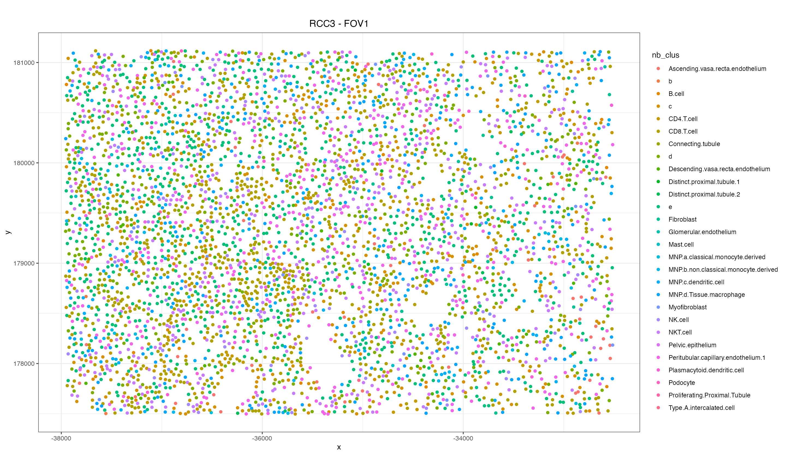
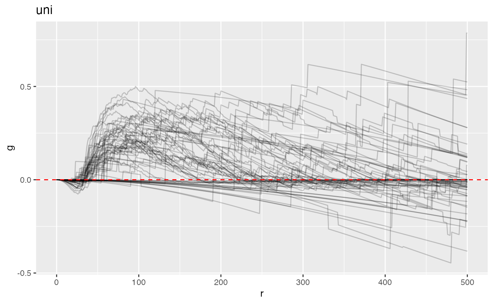
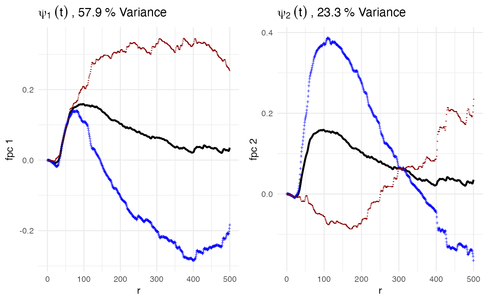
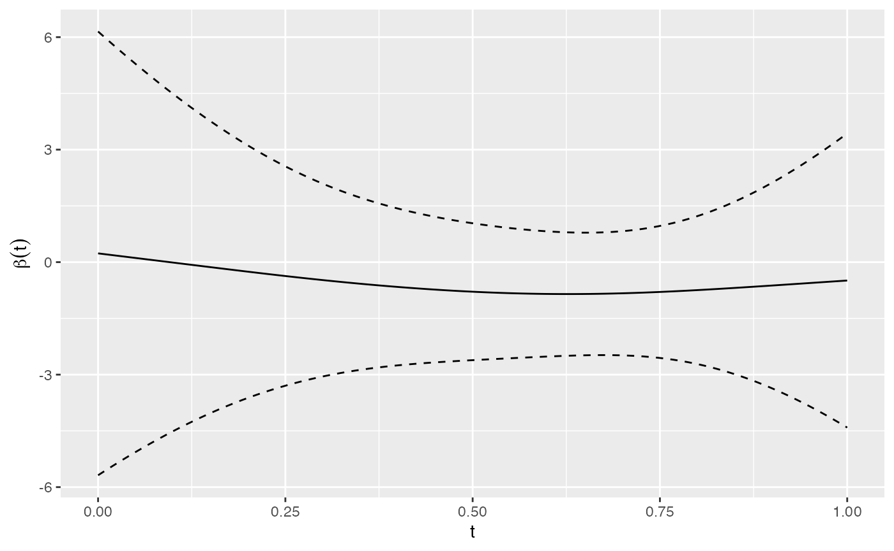

Functional Regression with Spatial Transcriptomics Data
Source:vignettes/web_only/st_fpca.Rmd
st_fpca.RmdThis vignette will show how to use the mxfda to analyze the clustering of cells from spatial transcriptomics. The data comes from a single cell spatial transcriptomics project exploring differences in the tumor microenvironment that is associated with immunotherapy (Soupir et al. (2023)). A preprint of the manuscript ‘Increased spatial coupling of integrin and collagen IV in the immunoresistant clear cell renal cell carcinoma tumor microenvironment’ can be found here: https://www.biorxiv.org/content/10.1101/2023.11.16.567457v1. Data to follow along with this vignette can be downloaded here: https://zenodo.org/doi/10.5281/zenodo.12730226.
Background
Kidney cancer (renal cell carcinoma; RCC) is one of the most common cancer types, with around 5% of people getting it at some point in their lives. Clear cell RCC (ccRCC) is the most common subtype of RCC and typically has a fair initial response to treatments called immune checkpoint inhibitors (ICI) or immunotherapy (IO). However, it’s common for the tumors to develop resistance to these treatments over time, usually 1 to 2 years. This data was generated to dive into understanding what changes are happening in the microenvironment of the tumors that may either lead to, or be a result of, developing treatment resistance.
The data is generated with the Nanostring CosMx SMI platform,
providing us with information about the expression of ~960 genes, cell
locations, and a few immunofluorescence markers. Tissues were used to
create tissue microarrays (TMAs) - a grid of ~1mm cores allowing for
many samples to be placed onto a single slide - in pairs of tumor and
stroma (in the annotation column of the Seurat object).
Cell types were created using Nanostring’s single-cell annotation
package called InSityType,
which uses CellProfileLibrary
references to identify cell types using a Bayesian approach (Danaher et al. (2022)). For the cell types that
are provided in the Seurat object, a semi-supervised approach meaning
cells in the samples were fit best to a cell type in the
CellProfileLIbrary reference and if there wasn’t a great fit (because of
something like cancer cell or the cell type isn’t in the reference)
it’ll be classified by a letter like ‘a’, ‘b’, etc. This is nice if it’s
known that a sample will have cell types that aren’t in the
reference.
In this vignette, we don’t have clinical information but we have tissue annotations letting us know which fields of view (FOVs), or samples, are from “Tumor” regions and “Stroma” regions. Univariate clustering will be calculated for CD8 T cells with mxfda. Associations can performed with the annotated compartments that the samples were from to assess if there is CD8 T cell clustering differences between the “Tumor” or “Stroma” compartmetns.
Preparing the Data
Data in the form of a Seurat object (v4) was downloaded from Zenodo
above and placed into a project folder. From the Seurat object, will
extract the meta.data as well as cell locations. Some QC
will need to be done to remove FOVs with low number of cells, otherwise
expression QC was previously performed.
#read from disk - much faster than reading from URL but can be done
kidney_st = readRDS("../../../seurat_object.Rds")
#the cell level features from the meta.data
dat = kidney_st@meta.dataTo extract the cell locations, it will be slightly more complicated
as each slide (RCC3, RCC4, and RCC5) have their cell locations stored in
different FOV objects in the kidney_st@images
list. Will implement a lapply to iterate over each and then
return the centroids.
#create dataframe with the global cell centroids
#iterate over each of the FOV objects
centroids = lapply(kidney_st@images, function(slide){
#Get the coordinates
GetTissueCoordinates(slide@boundaries$centroids) %>%
#keep only those that passed filtering from creating the seurat object
filter(cell %in% dat$id)
}) %>%
#since there are 3 lists, bind them all together
do.call(bind_rows, .) %>%
#column in the centroids with the cell identifier is called 'cell', rename to 'id'
rename("id" = cell)
#merge the centroids back to the meta.data
dat = full_join(dat,
centroids,
by = join_by(id))Since there may be some FOVs that have low cell counts, we can remove those. Considering there are about 30 different cell types and we want to calculate univariate clustering a good number of cells at a minimum should be ~500. This removes a single bad quality FOV on Slide RCC5 - FOV 13 - that only has 5 cells present.
dat = dat %>%
#group by slide and fov to calculate number of cells per slide
group_by(slide_ID_numeric, fov) %>%
#remove FOVs with low number of cells
filter(n() > 500)What remains are FOVs that have a fair number of cells (>500) and are from the tumor compartment. FOV 1 on RCC3 can be plotted to see how large the sample is (in pixels) to get a fair idea of how far our spatial summary functions should go.
dat %>%
filter(fov == 1, tissue == "RCC3") %>%
ggplot() +
geom_point(aes(x = x, y = y, color = nb_clus)) +
coord_equal() +
labs(title = "RCC3 - FOV1") +
theme_bw() +
theme(plot.title = element_text(hjust = 0.5)) +
guides(color = guide_legend(ncol = 1))
Spatial Analysis with mxfda
For an mxFDA object the data needs to be broken up in to
a spatial component and a metadata component.
Important to note that it is also needed that the metadata needs 2
columns that would be a sample ID (such as a unique identifier for each
slide-fov combination) and subject ID (think of patient level if there
were multiple slide-fov combinations per patient). the metadata should
also contain any covariates or information that you would to later model
- since we want to see differences between the tumor and stromal
compartments we will also extract that column. For this data will use
the slide-fov combination for both the sample and subject assuming each
sample is independent.
#add unique slide-fov column to identify samples
dat = dat %>%
ungroup() %>%
mutate(sampleID = paste0(Slide_name, "_", fov))
#select the new sample ID column and duplicate it for subject ID
metadata = dat %>%
select(sampleID, annotation) %>%
distinct() %>%
mutate(subjectID = sampleID,
#convert the annotation column to factor to make modeling easier later
tissue = as.factor(annotation))
#select the columns that will will tell what sample a cell is from, as well as location and type
spatial = dat %>%
select(sampleID, x, y, nb_clus, annotation)
#create the object for use in mxfda functions
mxFDAobject = make_mxfda(metadata = metadata,
spatial = spatial,
subject_key = "subjectID",
sample_key = "sampleID")
mxFDAobject
#> mxFDA Object:
#> Subjects: 64
#> Samples: 64
#> Has spatial data
#> Univariate Summaries: None
#> Bivariate Summaries: None
#> Multivariate Summaries: None
#> FPCs not yet calculated
#> MFPCs not yet calculated
#> FCMs not yet calculated
#> MFCMs not yet calculated
#> Scalar on Functional Regression not calculatedThe spatial summary function to be extracted from the data is nearest
neighbor G, which measures the proportion of cells of interest (here CD8
T cells) that have a nearest neighbor some radius r or less.
The spatial summary function can be extracted using the function
extract_summary_functions() specifying that we are
interested in the univariate methods
(extract_func = univariate), specifically the nearest
neighbor G function (summary_func = Gest). The search
radius around cells will range from 0 to 500 using the
r_vec option and edge correction will be done using the
reduced sampling method (edge_correction = rs).
If there are large regions of necrosis, connective tissue, of other
technical artifacts that cause large areas of samples to be missing
cells, the option permute_CSR should be used (Wilson et al. (2022)). This is usually more of
an issue with TMAs but does greatly depend on the tissue being
profiled.
mxFDAobject = extract_summary_functions(mxFDAobject,
extract_func = univariate,
summary_func = Gest,
r_vec = 0:500,
edge_correction = "rs",
#column with our cell annotations
markvar = "nb_clus",
#cell type of interest
mark1 = "CD8.T.cell")
#> Using Theoretical Complete Spatial Randomness for Nearest Neighbor GCalculated nearest neighbor G for our 0 to 500 can be visualized
using the S4 plot() function on the mxFDA
object. This function wraps ggplot2 so other plot
modifiers can be used/applied to the output object as would be done with
any other ggplot object. The returned values from
extract_summary_functions contains a column of the observed
spatial summary function value r, a column of the CSR
estimate (whether permuted or theoretical) csr, and one for
the difference between observed and CSR fundiff. If the
spatial summary function was produced by a different software or
package, add_summary_function() can be used to import to
the mxFDA object and the above column names will be
different. Here, the column of interest when plotting and further
analysis will be fundiff.
plot(mxFDAobject, y = "fundiff", what = "uni g") +
geom_hline(yintercept = 0, color = "red", linetype = 2)
Functional principal component analysis (FPCA) allows researchers to
extract out information from a set of curves such as the population mean
(overall average curve shape), deviations from that mean that represent
the largest variation, and how much those deviations contribute to each
samples measured curve. This can be done with the
run_fpca() function in mxfda . The
mxFDA object is passed in along with the spatial summary
function of interest ("uni g") and 2 column names: one for
the column with radius values ("r") and the other with
values relating to the spatial summary function
("fundiff"). Lastly, pve can be used to select
the percent variance explained by the FPCs kept in the output.
mxFDAobject = run_fpca(mxFDAobject,
metric = "uni g",
r = "r",
value = "fundiff",
pve = 0.99)
#> 64 sample have >= 4 values for FPCA; removing 0 samples
#> Warning in sqrt(Eigen$values): NaNs produced
summary(mxFDAobject)
#> mxFDA Object:
#> Subjects: 64
#> Samples: 64
#> Has spatial data
#> Univariate Summaries: Gest
#> Bivariate Summaries: None
#> Multivariate Summaries: None
#> FPCs Calculated:
#> Gest: 12 FPCs describe 99% variance
#> MFPCs not yet calculated
#> FCMs not yet calculated
#> MFCMs not yet calculated
#> Scalar on Functional Regression not calculatedCalling the summary of the mxFDA object returns 12 FPCs
were needed to explain 99% of the variance in our data. Again, using the
plotting function the first 2 FPCs can be plotted to show the mean and
direction of the first 2 functional principal components which explain
the largest variance between samples.
p1 = plot(mxFDAobject, what = 'uni g fpca', pc_choice = 1)
p2 = plot(mxFDAobject, what = 'uni g fpca', pc_choice = 2)
ggarrange(p1, p2, nrow = 1, ncol = 2)
Here we see the first and second functional principal components. The black line is the mean of all of the samples, the blue line is +1 standard deviation in the direction of the variance explained by that component and red line is -1 standard deviation. For FPC1 we interpret the pattern of this FPC as a shift up or down from the mean of all samples. Red are those with negative FPC values extracted from their G(r) curves and blue are those with positive FPC values. For example, high FPC corresponds to a negative deviation from the mean that moves further from the mean from ~r = 100 to r = 400. We see that these shapes deviating from the sample average describe ~58% of the variation in our samples.
Next we can run a linear functional cox model (lfcm) for the
G(r) functions to check associations of CD8 T cell clustering
curves and whether those CD8 T cells are on a tumor FOV or a stroma FOV.
Since we don’t have an event like we do with survival (patient death) we
will use “Scalar on Function Regression” which will model our functional
data against some binary outcome like tissue source (tumor/stroma). This
function from mxfda is called run_sofr() and
takes the mxFDA object, a name to store the model with in
the object, a formula to model (since we don’t have any useful
covariates will model functional data against the outcome
tissue class), the model type we want to fit, metric,
radius column name, and column name to model in the spatial summary
data.
mxFDAobject <- run_sofr(mxFDAobject,
model_name = "fit_sofr_tissue",
formula = tissue ~ 1,
family = "binomial",
metric = "uni g", r = "r", value = "fundiff")
#> 64 sample have >= 4 values for FPCA; removing 0 samplesThe modeling function will return the model as well as a message
letting the user know how many samples have been removed due to not
having enough radii with the spatial summary function calculated. In
order to get the model out of the mxFDA object to easily
plot, the extract_model() function can be used with the
name provided in the above code block to store the model under and the
type of model (‘sofr’) that we ran. Looking at the class of the output
model, we can see that it has a class of “sofr” letting us know that it
is in-fact a scalar-on-function regression model.
model = extract_model(mxFDAobject, 'uni g', type = 'sofr', model_name = 'fit_sofr_tissue')
class(model)
#> [1] "sofr" "pfr" "gam" "glm" "lm"By plotting this model, we can see the \(\hat{\beta}(r)\) values for all of the
radii in column r of our data scaled to between 0 and 1.
The dashed lines show the 95% confidence intervals for the fit and where
those intervals no longer include 0 indicate where there is
statistically significant differences in CD8 T cell clustering between
our tumor and stromal compartments. Since this is a binary outcome and
not continuous, the \(\hat{\beta}(r)\)
values are interpreted as the log odds ratio at radius r.
plot(model, ylab=expression(paste(beta(t))), xlab="t")